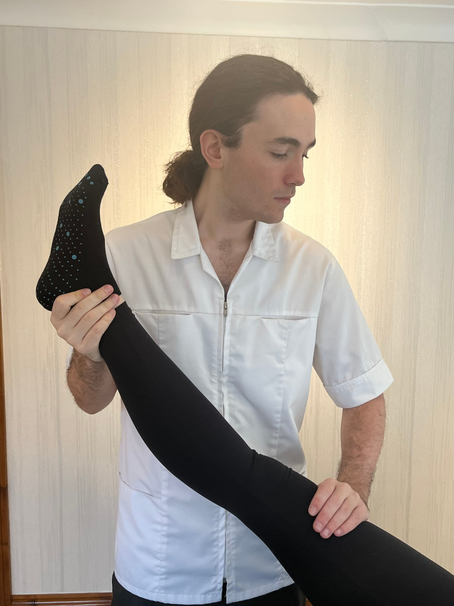

Patients often notice improvement within their first visits.
Barry & the Vale of Glamorgan
Family osteopathy for lasting pain relief
Hands-on manual therapy with Jolyon Whittaker — Welsh Osteopath of the Year. Gentle, evidence-led care for every age, from High Street Barry.
- Award-winning treatment
- Open 7 days · 9am–6:30pm
- All ages welcome

Pain relief with
Manual therapy
Monday–Sunday, 9am to 6:30pm at our Barry clinic.
Welsh Osteopath of the Year — trusted across the Vale.
Your osteopath
Care that listens, explains, and delivers
Jolyon combines detailed assessment with hands-on treatment and practical lifestyle advice — so you understand your body and leave with a clear plan forward.
- Thorough screenings and clear diagnosis
- Personalised exercise and lifestyle guidance
- Welsh Osteopath of the Year
Benefits of osteopathy
Move better. Hurt less. Live more.
Reduced pain
Targeted manual therapy to ease discomfort and restore confidence in movement.
Increased mobility
Release tension, improve joint function, and get back to the activities you love.
Better quality of life
Holistic support for the whole family — from sports injuries to everyday aches.
What to expect
Your first visit, step by step
-
01
Detailed assessment
A full screening to understand your history, symptoms, and goals.
-
02
Clear diagnosis
Plain-language explanation of what's going on — no medical jargon wall.
-
03
Hands-on treatment
Award-winning manual therapy tailored to your body and comfort level.
-
04
Take-home plan
Personalised exercise and lifestyle advice to keep progress going.
Patient stories
Real relief, real recommendations
“I had a really good experience — just 2 sessions and I'm sorted. Before treatment I was relying on painkillers and didn't think anything was possible. I've recommended Joe to all of my friends.”
“Joe is friendly and put me at ease. Extremely knowledgeable — he explained my issues and planned how to resolve them. I'm moving better already, after just one session. Highly recommend.”
“Excellent service! Jo was patient and professional, with advice tailored to my lifestyle. He really listened — I felt so much better after our session and would definitely recommend.”
Visit the clinic
High Street Barry, open every day
No one deserves to live in pain. Book online or call — we'll help you get back to enjoying your life.
Address
11 High Street, Barry
Vale of Glamorgan
CF62 7DZ
Vale of Glamorgan
CF62 7DZ
Hours
Monday–Sunday
9:00am – 6:30pm